Lluvia, ascenso del nivel freático, fugas de redes, bombeo
u y succión
Lluvia, presión de poros, humedad, succión
🏗️ Cargas estáticas
Peso propio, rellenos, terraplenes, cimentaciones
σ
Cargas, asentamientos
📳 Cargas dinámicas
Tráfico, sismos, maquinaria, voladuras
σ y propiedades
Aceleración, vibración
⛏️ Descarga o cambio de geometría
Excavaciones, cortes de ladera, erosión al pie, socavación
σ y geometría
Desplazamiento lateral, inclinación
🌡️ Cambios térmicos
Ciclos día-noche, estaciones
—
Temperatura
🧱 Deterioro del material
Meteorización, degradación
Propiedades
Inspección y tendencia a largo plazo
🧬
El tipo de suelo y su historia no son una causa: hacen que el mismo estímulo produzca respuestas distintas.
🔗
Casi siempre actúan varias causas a la vez.
Desplazamiento no es lo mismo que deformación
Desplazamiento (δ)
Cuánto se movió un punto respecto a una referencia fija. Unidades: mm o cm. Mide un punto o un perfil de puntos; siempre necesita referencia estable.
Deformación (ε = ΔL / L)
Cuánto cambió la distancia o forma entre puntos, relativa a su tamaño inicial. Adimensional, % o με. Es local y depende de la longitud de medición (L): compara dos puntos entre sí.
Relación: δ = ∫ ε dL (el desplazamiento acumulado en superficie es la suma de las deformaciones a lo largo del trayecto).
Normal o axial: alargamiento o acortamiento
Cortante: capas que se deslizan, cambia la forma
Volumétrica: compresión o expansión, cambia el volumen
❓
Si pongo un sensor de deformación en medio de un bloque que se desliza entero, ¿qué lectura espero?
Curva esfuerzo–deformación
Así responde el suelo a la carga, por etapas
📖Cómo leer la curva
Elástico: al quitar la carga el suelo vuelve a su forma.
Fluencia (yield): desde aquí parte de la deformación es permanente.
Pico: la máxima resistencia; luego el suelo empieza a perderla.
Residual: la resistencia que queda tras la rotura.
En suelos la relación no es lineal ni sigue la ley de Hooke.
El pico con reblandecimiento es típico de suelos densos; los sueltos pueden endurecerse hasta un valor constante.
Reversible o acumulado
Elástica: se recupera. En el monitoreo: ciclos que suben y bajan.
Plástica: queda permanente. En el monitoreo: escalones que no regresan.
Viscosa (fluencia): continúa con carga constante. En el monitoreo: pendiente sostenida.
🔭
Al monitorear no vemos el esfuerzo, vemos la deformación.
⚠️
Lo que preocupa es el movimiento acumulado que no regresa.
Mecanismos de deformación en campo
Mecanismo
Causa típica
Deformación dominante
¿Reversible?
🏗️ Asentamiento inmediato
Cargas estáticas
Distorsión y compresión
Parcialmente
🧽 Consolidación primaria
Cargas y salida de agua
Volumétrica
No
⏳ Consolidación secundaria
Tiempo bajo carga constante
Fluencia
No
🌵 Expansión y retracción
Humedad y succión
Volumétrica
En gran parte sí
⛰️ Reptación
Agua y gravedad
Cortante lento y distribuido
No
🌋 Deslizamiento
Lluvia, descarga al pie, sismo
Cortante concentrado
No
Fluencia lenta (creep): las tres etapas ★ Diapositiva clave
La forma de la curva de desplazamiento anticipa la falla
🕰️Tres etapas, tres lecturas
Primaria: la velocidad baja; el terreno se acomoda.
Secundaria: velocidad constante; movimiento lento y estable.
Terciaria: la velocidad aumenta sin parar; se acerca la rotura.
Fluencia lenta (creep) no es lo mismo que punto de fluencia (yield).
🚨
Lo que dispara una alerta no es cuánto se movió, sino cómo cambia la velocidad. Pasar de la etapa 2 a la 3 es la señal crítica.
¿Toda deformación se puede medir?
Conceptualmente sí; en la práctica depende de cinco condiciones:
Magnitud frente a resolución del sensor
Espesor de la zona que se deforma
Ubicación del sensor
Dirección medida
Referencia estable
👁️
Visible a simple vista frente a detectable solo con instrumentos. Esperar a ver las grietas es esperar demasiado.
Se mide el efecto y también la causa
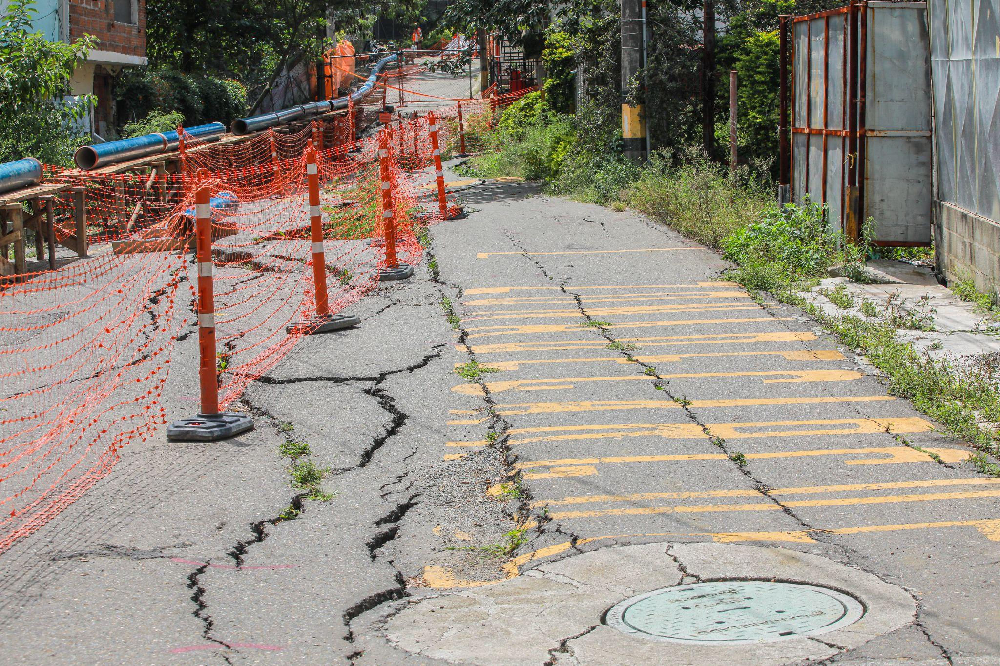
💧 agua 🏗️ cargas 📳 vibración 🌡️ temperatura ↔️ movimiento
Qué se mide
Variable
Para qué sirve
↔️ Efecto
Desplazamiento, su velocidad y aceleración
Alerta directa
↔️ Efecto
Deformación (local)
Diagnóstico y localización
💧 Causa, agua
Lluvia, presión de poros, humedad y succión
Indicador adelantado
🏗️ Causa, cargas
Celdas de carga y de presión total
Interpretar el movimiento
📳 Causa, vibración o sismos
Acelerómetros
Eventos dinámicos
🌡️ Causa, temperatura
Sensores de temperatura
Separar el efecto térmico del movimiento real
🔎
Una grieta no revela su causa; por eso se mide más de una variable.
Para qué monitorear
👁️Anticipar
Ver el cambio antes de que sea visible.
✅Verificar
¿El terreno y la obra responden como se diseñó?
⚖️Decidir y documentar
Respaldar decisiones y dejar registro (disputas y futuros diseños).
➡️
Si vigilamos desplazamiento, su velocidad y las causas, ¿con qué sensores lo medimos?
Instrumentos para medir desplazamiento y deformación
La deformación en el terreno y las consecuencias asociadas se pueden monitorear a diferentes escalas temporales y espaciales.
📍Sensores en sitio (contacto directo)
En superficie:
Prismas y estación total • GNSS (GPS diferencial)
Extensómetros y fisurómetros • Acelerómetros (MEMS)
En profundidad y en elementos:
Inclinómetros (perfil vertical de desplazamiento)
TDR (Reflectometría) y fibra óptica distribuida
Celdas (de carga, deformación y presión total) • Celdas de asentamiento
Deformímetros de cuerda vibrante
🛰️Sensores remotos (sin contacto físico)
Plataformas aéreas y terrestres:
Drones (UAV): fotogrametría y DEM diferencial multitemporal
Escáner láser terrestre (TLS / LiDAR): nubes de puntos 3D
Plataformas orbitales:
Satélites ópticos: detección de cambios de cobertura y NDVI
Satélites de radar (InSAR): desplazamientos milimétricos en la línea de vista (LOS)
💡
Nota conceptual: El sistema GNSS utiliza satélites en el espacio, pero el receptor y la antena están firmemente instalados en el terreno: por eso se clasifica como un instrumento en sitio.
¿Qué mide realmente cada instrumento?
Casi todo mide desplazamiento o rotación; la deformación se calcula
Comprender el principio físico directo evita confusiones entre lo que el sensor registra y lo que el ingeniero interpreta.
Mide directamente
Instrumentos representativos
Qué se calcula / interpreta
📍 Posición de puntos
Topografía (estación total), GNSS, Drones, LiDAR terrestre, InSAR (en la línea de vista)
Desplazamiento absoluto o relativo ($\delta$) y velocidad ($v = \Delta\delta / \Delta t$)
📏 Distancia entre dos puntos
Extensómetros de varilla / cable, fisurómetros
Desplazamiento relativo ($\Delta L$) y deformación media ($\varepsilon = \Delta L / L_0$)
📐 Ángulo o inclinación
Inclinómetros (sonda o fijos), acelerómetros MEMS
Desplazamiento lateral: puntual en MEMS; perfil continuo integrado en profundidad en inclinómetros
⚡ Resistencia o frecuencia
Galgas extensométricas (resistencia), cuerda vibrante (frecuencia de resonancia)
Deformación ($\varepsilon$) y, mediante el módulo $E$ del acero, fuerza o esfuerzo ($\sigma$)
⏱️ Tiempo de retorno de pulso
TDR (Time Domain Reflectometry con cable coaxial)
Profundidad donde se cizalla o deforma el cable por la falla (resolución de cm a dm)
⚡
La velocidad (mm/día) y la aceleración del deslizamiento se calculan derivando numéricamente la serie temporal de desplazamientos; el acelerómetro mide vibración e inclinación, no esa aceleración lenta de la masa.
Topografía y GNSS: medir la posición de puntos
↔️ EfectoSuperficiePuntual (red de puntos)
Estación Total con Prismas
Prismas reflectores ópticos fijos en el terreno, medidos por distancia láser y ángulos desde un pilar estable fuera de la ladera.
Ventaja: Muy alta precisión milimétrica y monitoreo de decenas a cientos de puntos con una sola estación. Limitación: Requiere línea de vista despejada (afectada por niebla o vegetación) y lectura periódica manual (salvo estación robotizada).
GNSS (GPS Diferencial Geotécnico)
Receptor fijo y antena geodésica instalados directamente sobre el bloque inestable, calculando coordenadas 3D continuas con estación base de referencia.
Ventaja: Registro continuo 24/7 en tiempo real, opera con lluvia, niebla y noche, sin requerir línea de vista óptica. Limitación: Requiere cielo abierto (horizonte despejado, sin obstrucción por vegetación densa o paredes rocosas), costo más elevado por punto y mide un único punto por antena.
Extensómetros y fisurómetros
Monitoreo de deformaciones superficiales
↔️ EfectoSuperficiePuntual (base corta entre 2 puntos)
Miden el cambio de distancia entre dos puntos mediante la variación de posición relativa entre sus extremos anclados.
🔍
En grietas y juntas en roca, concreto o estructuras se les denomina fisurómetros (pueden ser de placa milimétrica visual, potenciómetro digital o cuerda vibrante).
Aplicaciones en campo:
Detectan alargamiento o contracción por empujes del terreno. Son clave en el monitoreo de grietas de tracción en la corona de taludes, convergencia en túneles, y juntas de expansión en presas y muros.
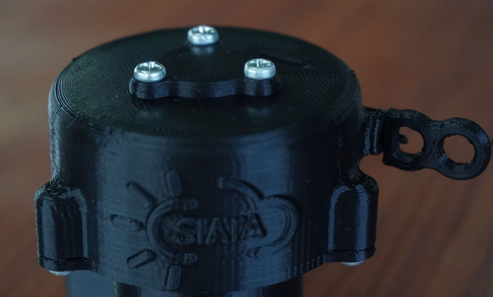
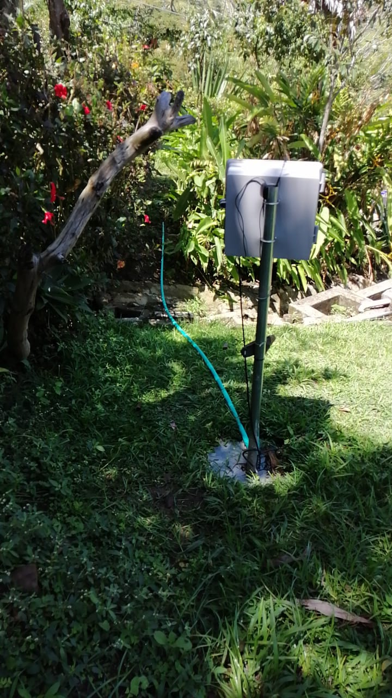
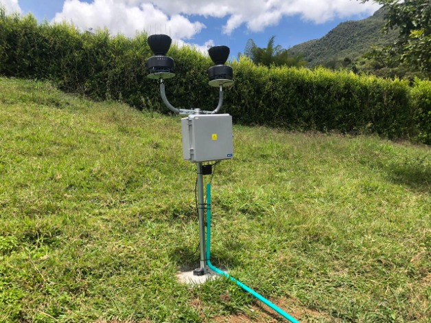
Extensómetros y fisurómetros: ventajas y limitaciones
↔️ EfectoSuperficiePuntual
✅Ventajas
Medición directa del desplazamiento relativo entre dos puntos: la deformación se obtiene dividiendo por la distancia base ($\varepsilon = \Delta L / L_0$).
Alta precisión milimétrica y submilimétrica directa sin modelos complejos.
Instalación rápida y lectura sencilla (mecánica, digital o telemétrica en tiempo real).
Aplicable en diversas obras: presas, túneles, edificios y laderas rocosas.
⚠️Limitaciones
Resolución espacial estrictamente local: solo mide la grieta en el punto exacto donde fue colocado; si el talud abre una grieta 2 metros más arriba, no detecta nada.
Expuestos a daños físicos en superficie (caída de rocas, vegetación, animales o intemperie).
Rango de medición acotado: desplazamientos bruscos pueden descarrilar o romper el sensor.
Extensómetros: registro en campo
Registro en grieta • La Bermejala
↔️ EfectoSuperficiePuntual (serie de tiempo)
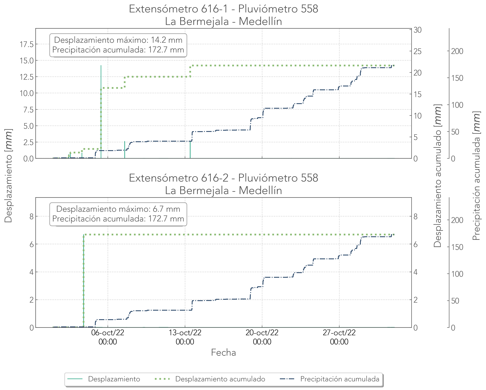
🚨
Los principales escalones de movimiento coinciden con picos de lluvia: la causa y el efecto en una sola gráfica. Cada escalón es movimiento acumulado que no regresa.
Acelerómetros (MEMS): inclinación y vibración
↔️ Efecto (inclinación)📳 Causa (vibración)SuperficiePuntual
Los sensores MEMS (Micro-Electro-Mechanical Systems) miden aceleración en uno, dos o tres ejes ortogonales mediante microrresortes de silicio:
En reposo (estático): miden la inclinación (cabeceo y balanceo / pitch & roll) a partir del vector de la gravedad terrestre ($g$).
En movimiento (dinámico): miden la vibración y aceleraciones transitorias.
💡
El mismo sensor mide un efecto (inclinación progresiva del terreno) y una causa (vibraciones por maquinaria, voladuras, tráfico o sismos).
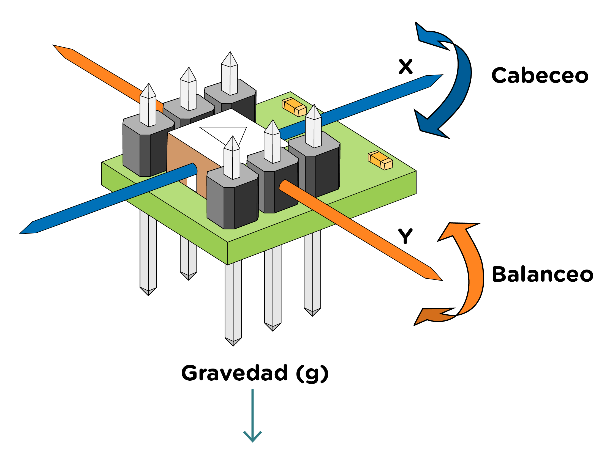
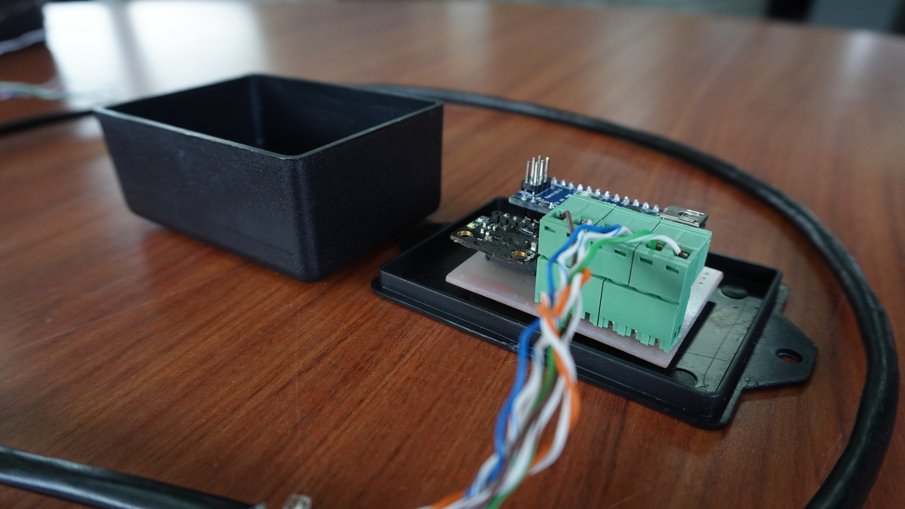
Acelerómetros (MEMS): ventajas y limitaciones
↔️ Efecto📳 CausaSuperficiePuntual
✅Ventajas
Alta sensibilidad para detectar movimientos dinámicos e inclinaciones mínimas.
Bajo costo, muy bajo consumo eléctrico y dimensiones sumamente compactas.
Fáciles de integrar en redes inalámbricas IoT para monitoreo continuo en tiempo real.
⚠️Limitaciones
Resolución espacial puntual: solo mide la rotación o aceleración del nodo o placa exacta donde está atornillado.
Afectados por ruido ambiental, cambios de temperatura y vibraciones espurias (requiere filtrado y calibración).
El cálculo de desplazamiento mediante doble integración de aceleración acumula deriva (drift) por ruido y sesgo del sensor.
Acelerómetros: series de tiempo
Registro en campo • Manga Arriba (Girardota)
↔️ Efecto📳 CausaSuperficiePuntual
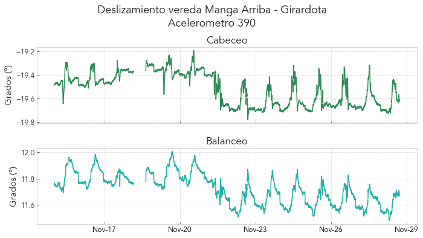
🌡️
Los ciclos que se repiten cada día pueden ser térmicos: hay que separar el efecto de la temperatura del movimiento real.
Inclinómetros: monitoreo de deformaciones profundas
↔️ EfectoProfundidadLínea (perfil continuo)
Miden la inclinación de un tubo a lo largo de la profundidad; de ahí se calcula el desplazamiento lateral acumulado respecto a la base empotrada en roca.
Modalidades de medición:
Pueden ser de sonda portátil (lectura manual periódica con cable graduado).
O fijos con sensores MEMS en serie (IPI - In-Place Inclinometers) para lectura continua y automática.
Componentes y esquema de la inclinometría convencional adaptados de Machan & Bennett (2008).
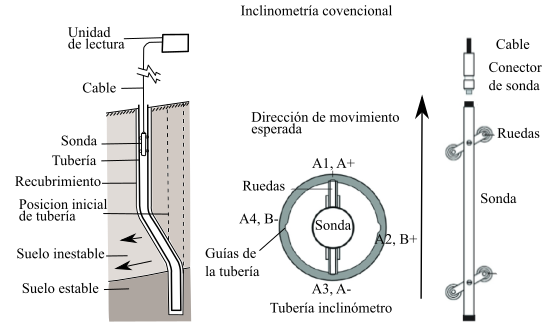
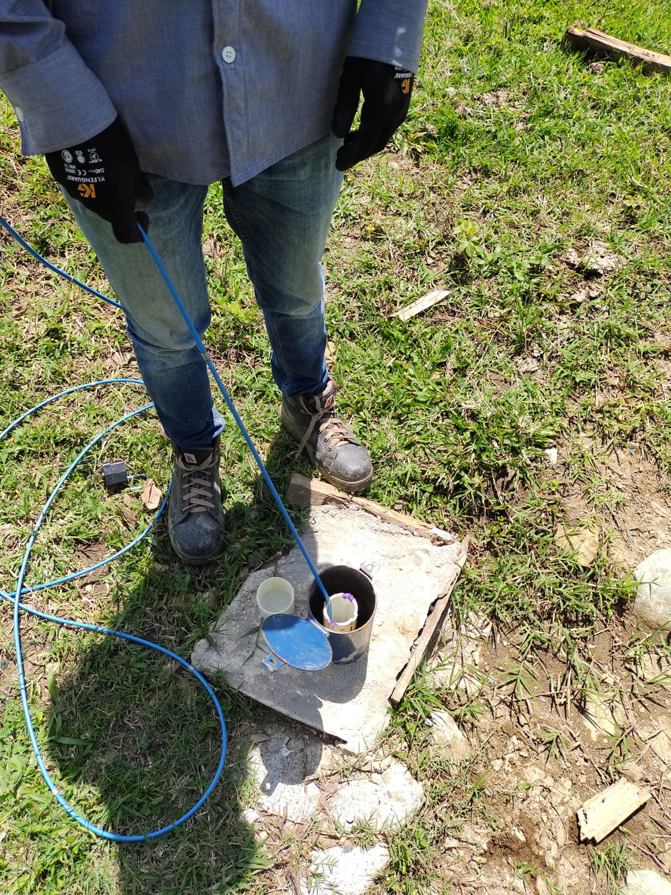
Inclinómetros: ventajas y limitaciones
↔️ EfectoProfundidadLínea (perfil continuo)
✅Ventajas
Permiten mediciones precisas a lo largo de toda la perforación.
Permiten determinar con exactitud la profundidad de las superficies de falla y la magnitud del desplazamiento.
Alta precisión en deformaciones horizontales acumuladas milímetro a milímetro.
⚠️Limitaciones
Alto costo de ejecución de perforaciones profundas e instalación de tubería ranurada.
Mantenimiento de tubería: puede obstruirse o cizallarse.
La rotura o cizallamiento total de la tubería imposibilita lecturas futuras.
Requiere personal especializado y logística periódica para lectura manual.
Inclinómetros: registro en campo
Identificación de la superficie de falla activa (señales deseadas)
↔️ EfectoProfundidadLínea (perfil vertical)
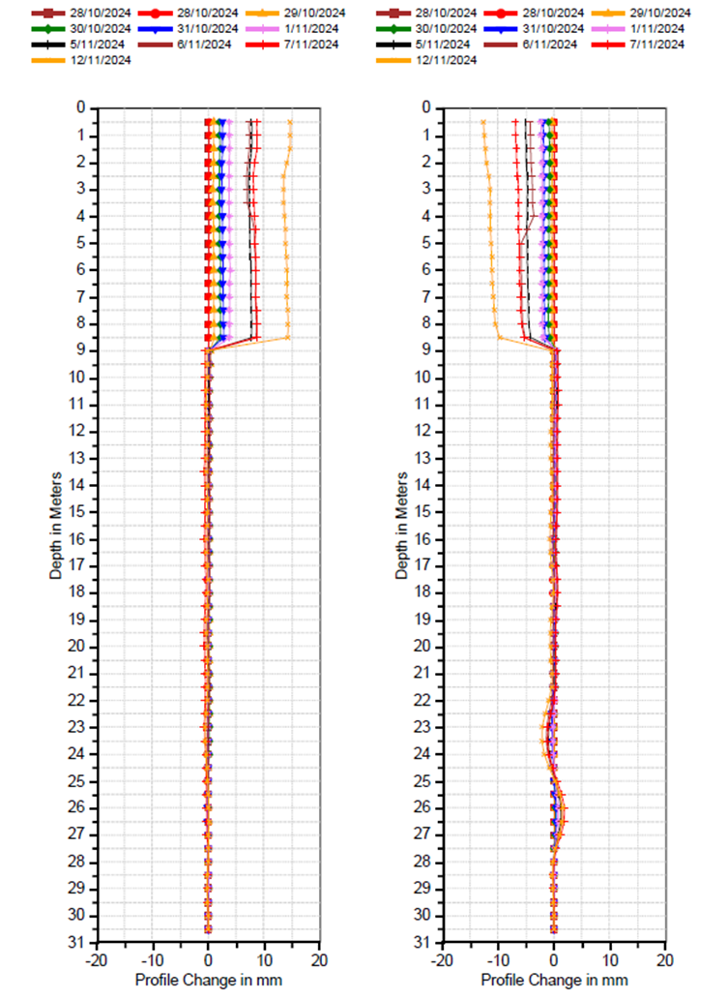
⚡
Donde el perfil se quiebra (cerca de 9 m) está la superficie de falla.
🧱
Por encima, el bloque se mueve casi entero; por debajo no hay movimiento.
TDR (Time Domain Reflectometry)
Monitoreo de deformaciones profundas
↔️ EfectoProfundidadLínea (cable continuo)
Los sensores TDR detectan la profundidad donde se cizalla un cable coaxial enterrado a partir del tiempo de retorno de un pulso electromagnético, localizando la superficie de corte.
⚡
Al registrar variaciones en la impedancia y forma del pulso debido a la deformación mecánica local del cable, localiza la cota de la superficie de corte con resolución de centímetros a decímetros.
Aplicaciones:
Monitoreo continuo de deslizamientos profundos, taludes viales, minería y deformaciones en infraestructuras enterradas.
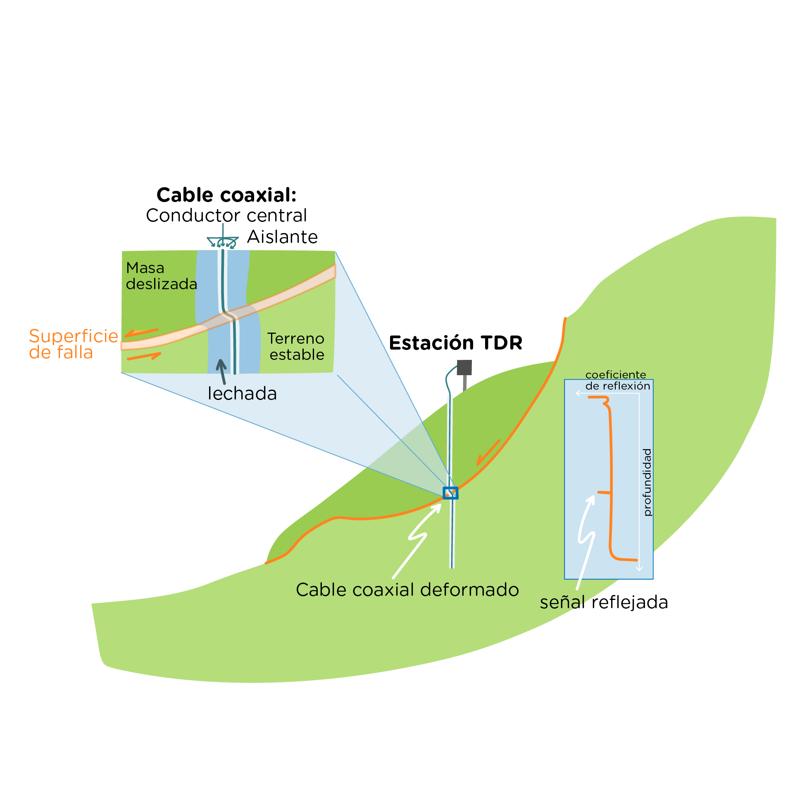
TDR (Time Domain Reflectometry): ventajas y limitaciones
↔️ EfectoProfundidadLínea (cable continuo)
✅Ventajas
Mediciones continuas a lo largo de toda la longitud de la sonda.
Permiten determinar superficies de falla y magnitud de deformación.
Monitoreo continuo automatizable; el cable coaxial es más económico frente a tuberías ranuradas, aunque la perforación sigue teniendo costo importante.
⚠️Limitaciones
Alto costo de perforaciones e instrumentación en roca o suelo duro.
Los datos requieren un análisis técnico detallado; la interpretación cuantitativa puede ser compleja.
Factores como corrosión del cable pueden afectar la señal electromagnética con los años.
TDR: registro en campo
Registro en Ancón II • Copacabana
↔️ EfectoProfundidadLínea (cable continuo)
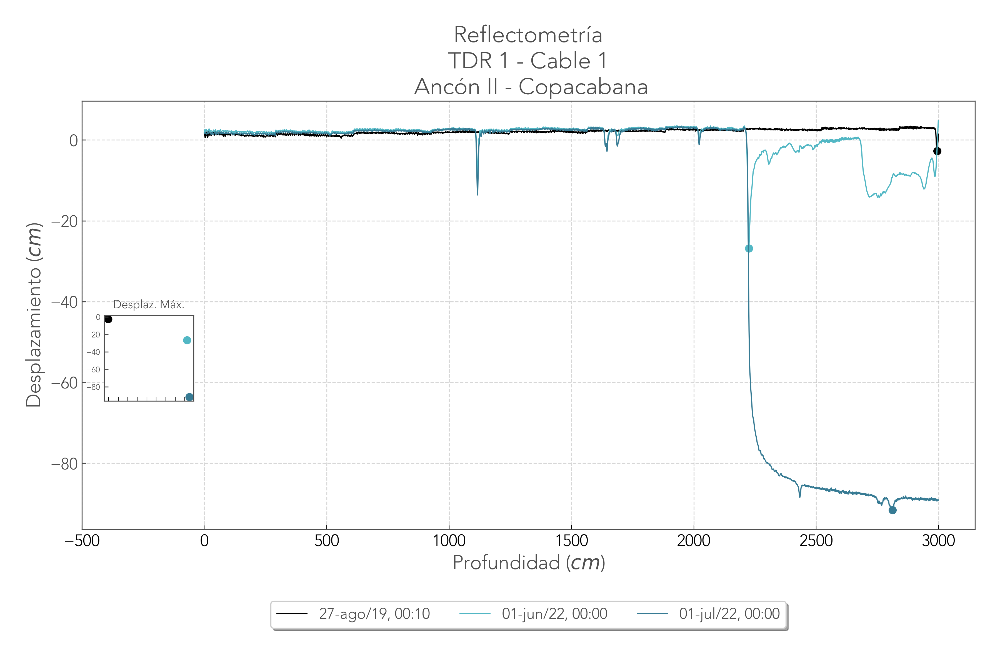
🔍
El salto cerca de los 22 m es la zona de corte: el movimiento se concentra en una franja delgada.
Detecta dónde se deforma o cizalla un cable. Ideal para localizar superficies de falla en perforaciones.
Robusto, económico y con interrogadores accesibles para monitoreo de roturas mecánicas.
Fibra Óptica Distribuida (DTS / BOTDA / DAS)
Mide deformación continua (BOTDA / BOTDR, resolución en με), temperatura (DTS) y vibración/acústica (DAS) a lo largo de toda la fibra (alcance de kilómetros).
Sensado distribuido para detectar deformaciones tempranas a lo largo de laderas enteras, túneles o tuberías.
💡
Ambos dan una medición continua a lo largo de una línea, no solo en un punto.
Celdas: Deformación vs. Carga
Monitoreo de deformaciones y esfuerzos en elementos estructurales
↔️ Efecto (Deformación)🏗️ Causa (Carga)En elementosPuntual
📏Celda de deformación
Sensor que mide cambios muy pequeños en la deformación de un material mediante la variación de su resistencia eléctrica (mide qué tanto se estira o comprime un elemento).
⚠️ Una celda de carga mide fuerza porque internamente mide deformación → Mide la CAUSA
💡
Entonces… ¿son diferentes? Sí… pero usan el MISMO principio interno.
Celdas: de la galga a la fuerza
↔️ Efecto (Deformación)🏗️ Causa (Fuerza)En elementosPuntual
La galga es un hilo metálico pegado a una pieza; al estirarse cambia su resistencia eléctrica.
$$\sigma = E \cdot \varepsilon$$
La galga mide deformación ($\varepsilon$).
La celda de carga la convierte en esfuerzo ($\sigma = E \cdot \varepsilon$) y de allí en fuerza ($F = \sigma \cdot A$).
⚠️
Esta relación lineal es válida para el metal de la celda. El suelo, como vimos, no la sigue.
Otro principio de medición es la cuerda vibrante (mide frecuencia de resonancia), el mismo de los piezómetros.
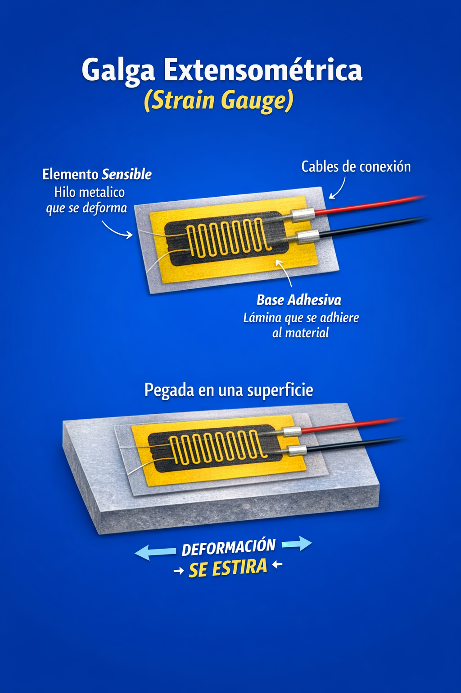
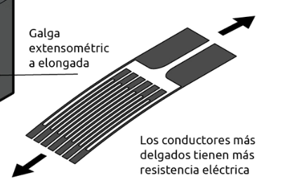
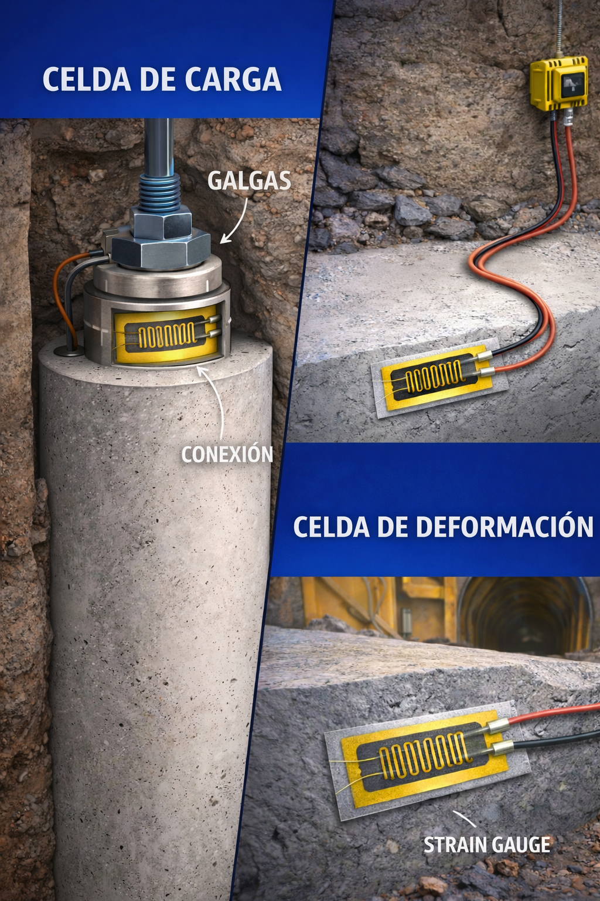
Otros instrumentos comunes en obra
Tres instrumentos esenciales para el control de esfuerzos, asentamientos y elementos estructurales.
📉Celda de asentamiento
↔️ EfectoProfundidadPuntual
Mide el asentamiento vertical bajo terraplenes y rellenos. Se acompaña del piezómetro (consolidación).
Permite controlar los tiempos de disipación de presión de poros y asentamiento en suelos blandos.
🪢Deformímetro de cuerda vibrante
↔️ EfectoEn elementosPuntual
Mide la deformación en anclajes, pilotes y muros, con lectura remota y alta estabilidad temporal.
Ideal para monitoreo a largo plazo en estructuras de contención y túneles.
🗜️Celda de presión total
🏗️ Causa (σ)Profundidad / ElementosPuntual
Mide el esfuerzo total (σ) en el suelo o contra una estructura. Junto con el piezómetro da el esfuerzo efectivo:
$$\sigma' = \sigma - u$$
Drones para la detección de deformaciones
Monitoreo con sensores remotos locales
↔️ EfectoSuperficieÁrea (DEM / nube de puntos)
Permite analizar cambios en el terreno utilizando tanto imágenes ópticas como modelos digitales de elevación (DEM). Los drones equipados con cámaras de alta resolución y sensores láser permiten realizar inspecciones detalladas a nivel local con alta precisión.
📡
También existe el escáner láser terrestre (TLS), que da una nube de puntos desde el suelo.
🗺️
Análisis del 14 al 25 de julio de 2023: Zonas rojas indican desplazamientos negativos (hundimientos); zonas azules indican desplazamientos positivos (depositación).
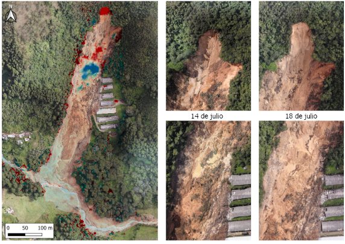
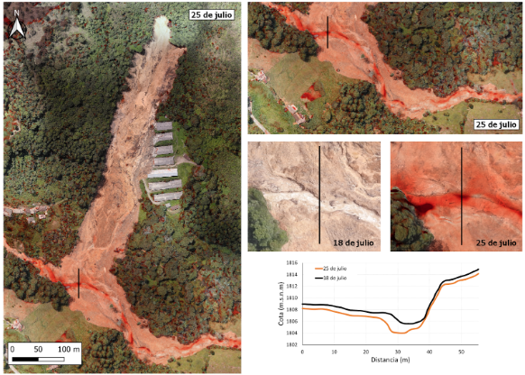
Satélites y misiones para deformaciones
Monitoreo de deformaciones con sensores remotos
↔️ EfectoSuperficieÁrea (regional)
El monitoreo satelital de deformaciones se ha convertido en una herramienta clave en la geotecnia para el control de movimientos del terreno y estructuras a gran escala.
Este tipo de monitoreo utiliza dos tecnologías principales: imágenes ópticas y radar de apertura sintética (SAR). Ambas permiten medir desplazamientos y deformaciones del terreno de forma remota, sin necesidad de instalar sensores físicos en el sitio.
🛰️ Misiones de Radar (SAR):
Sentinel-1 (Copernicus / ESA) • Banda C, acceso abierto mundial
SAOCOM (CONAE) • Banda L, penetración en cobertura vegetal
TerraSAR-X / PAZ • Banda X, muy alta resolución submétrica
📷 Misiones Ópticas:
Sentinel-2 (Copernicus / ESA) • Multiespectral, 10 m de píxel
Landsat 8/9 (NASA / USGS) • Serie histórica continua
PlanetScope • Constelación de alta revisita diaria
Monitoreo con imágenes ópticas satelitales
↔️ EfectoSuperficieÁrea (regional)
Las imágenes ópticas satelitales proporcionan una vista detallada de la superficie terrestre y permiten detectar deformaciones mediante el análisis de diferencias entre imágenes tomadas en diferentes momentos.
Comparando las posiciones de puntos específicos en imágenes capturadas en fechas distintas, se pueden identificar desplazamientos horizontales y deformaciones superficiales. También permiten realizar análisis de cambios de coberturas.
🌿
El NDVI mide vegetación, no desplazamiento: los cambios de cobertura son un indicio indirecto.
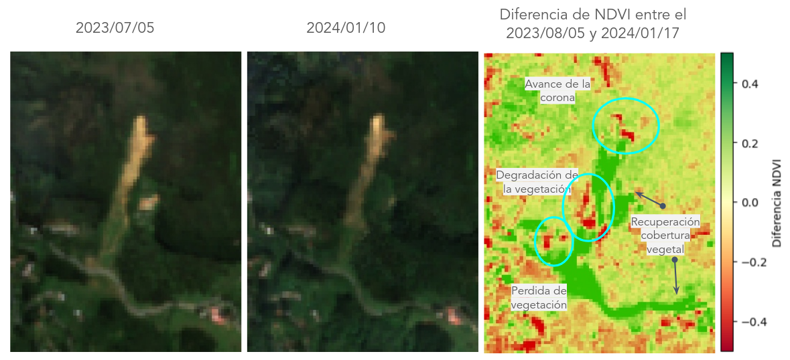
Monitoreo con Interferometría de Radar (InSAR)
Medición milimétrica desde el espacio
↔️ EfectoSuperficieÁrea (regional)
La Interferometría SAR (InSAR) compara la fase de señales de radar multitemporales capturadas en sucesivos pasos orbitales para medir deformaciones del terreno con precisión milimétrica.
🛰️
Mide el desplazamiento en la línea de vista del satélite (LOS); combinando órbitas ascendente y descendente se estima el vertical y el horizontal.
⚠️
En laderas muy empinadas y con mucha vegetación puede perderse la señal.
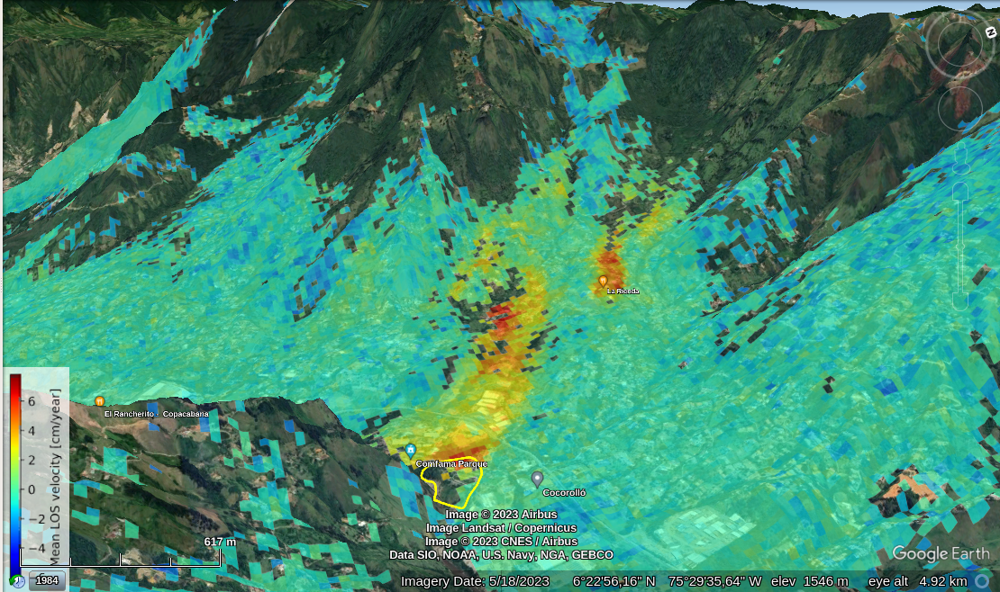
¿Qué instrumento uso?
Cada sensor cubre una parte del problema
Criterio
En sitio (campo)
Remoto (drones / satélites)
Cobertura
Puntual / líneas (localizada)
Área amplia / regional (ladera entera)
Frecuencia
Continua (tiempo real) o periódica
Periódica (días según órbita o vuelo)
Profundidad
Superficie y subsuelo (decenas de m)
Estrictamente superficial
Precisión
Milimétrica y submilimétrica
Milimétrica (InSAR) / Centimétrica (UAV)
Ideal para
Saber cuánto, a qué profundidad y qué tan rápido
Saber dónde se mueve el terreno
🧩
No hay un instrumento perfecto: los remotos dan cobertura para saber dónde se mueve el terreno y los de campo dan precisión para saber cuánto y a qué profundidad.
Combinar para alertar
Cuatro pasos en secuencia
Remoto: ¿Dónde se mueve?
(InSAR, drones).
En sitio: ¿Cuánto, a qué profundidad y qué tan rápido?
(inclinómetro, extensómetro, TDR, GNSS).
Causas: ¿Por qué?
(pluviómetro, piezómetro, celdas, acelerómetros).
Decisión: Velocidad y aceleración frente a umbrales
(paso de la etapa 2 a la 3 de la fluencia lenta).
⚡
El agua y las cargas cambian el equilibrio, el suelo se deforma, el desplazamiento y su velocidad alertan.
* Los umbrales los define cada proyecto; no hay valores genéricos.
Lecturas para profundizar
Complementan este módulo
⭐ Esencial
Casagli et al. (2023) • Panorama actual de los sensores remotos para deslizamientos.
↳ Marco general para «Satélites y misiones», «Drones» e InSAR: qué técnica sirve para detectar, cuál para monitorear y cuál para predecir.
⭐ Esencial
Carlà et al. (2017) • Guía práctica del método de la velocidad inversa y de cómo fijar alarmas.
↳ Es la base de «Fluencia lenta: las tres etapas» y de la diapositiva de velocidad inversa del módulo 5: cómo suavizar los datos y cómo fijar niveles…
Complementaria
Carlà et al. (2019) • Sentinel-1 mostró aceleración días o semanas antes de tres fallas catastróficas.
↳ Une InSAR con la velocidad inversa: tres casos en que la aceleración era visible desde el espacio antes de la falla.
Complementaria
Solari et al. (2020) • Más de 250 trabajos de InSAR en deslizamientos, resumidos.
↳ Complementa la diapositiva de InSAR con un balance de aplicaciones reales: qué se detecta bien y qué no.
EscanéameTodas las lecturas del módulo, con PDF, preguntas guía y su relación con estas diapositivasfedericogmz.github.io/instrumentacion-geotecnica/lecturas.html#m4
📚
Antes de la próxima clase: lee las ⭐ esenciales y responde la pregunta guía de cada una.